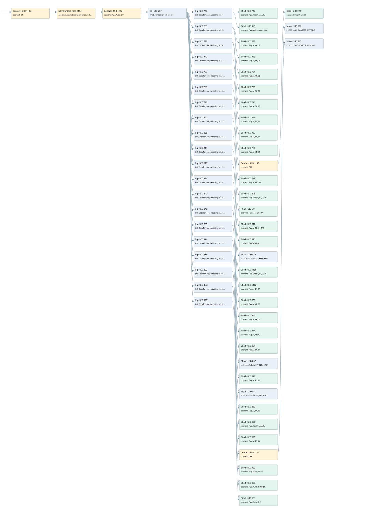

production
auto start motors · 검색 색인 순서 4 · 원본 내부 NID 추정 4
백업 PLF 원본의 2664527 바이트 위치에서 복원한 XML. 검색 문서 1844의 객체 키 16102200c410000000000000와 연결했다. 이름 해석 86/86개. 남은 RefId는 상수 또는 미해석 참조다.
연결 구조 다시 그리기
원본 Part/PCon/Wire를 이용한 연결도다. TIA 화면의 래더 배치 또는 실행 결과를 재현한 그림은 아니다. 핀 연결은 아래 표와 원본 XML을 기준으로 읽는다. 노드 위에 마우스를 두면 피연산자 이름을 볼 수 있다.

접점·코일·블록과 피연산자
| Part UID | Gate | Negated 핀 | 연결 피연산자 |
|---|---|---|---|
| 1145 | Contact | operand = ON | |
| 1154 | Contact | operand | operand = Allarm.Emergency_module_fault |
| 1147 | Contact | operand = Flag.Auto_ON1 | |
| 737 | Eq | in1 = Data.Tipo_preset; in2 = 2 | |
| 743 | Eq | in1 = Data.Tempo_presetting; in2 = 1 | |
| 747 | SCoil | operand = Flag.RESET_ALLARM | |
| 749 | RCoil | operand = Flag.Maintenance_ON | |
| 753 | Eq | in1 = Data.Tempo_presetting; in2 = 3 | |
| 757 | SCoil | operand = Flag.M_VR_03 | |
| 759 | SCoil | operand = Flag.M_VR_04 | |
| 761 | SCoil | operand = Flag.M_VR_05 | |
| 765 | Eq | in1 = Data.Tempo_presetting; in2 = 6 | |
| 769 | SCoil | operand = Flag.M_SC_01 | |
| 771 | SCoil | operand = Flag.M_SC_10 | |
| 773 | SCoil | operand = Flag.M_SC_11 | |
| 777 | Eq | in1 = Data.Tempo_presetting; in2 = 10 | |
| 780 | SCoil | operand = Flag.M_FN_04 | |
| 783 | Eq | in1 = Data.Tempo_presetting; in2 = 18 | |
| 786 | SCoil | operand = Flag.M_VS_01 | |
| 789 | Eq | in1 = Data.Tempo_presetting; in2 = 21 | |
| 1149 | Contact | operand = OFF | |
| 793 | SCoil | operand = Flag.M_MC_05 | |
| 796 | Eq | in1 = Data.Tempo_presetting; in2 = 24 | |
| 799 | SCoil | operand = Flag.M_MC_04 | |
| 802 | Eq | in1 = Data.Tempo_presetting; in2 = 27 | |
| 805 | SCoil | operand = Flag.Enable_R2_GATE | |
| 808 | Eq | in1 = Data.Tempo_presetting; in2 = 30 | |
| 811 | RCoil | operand = Flag.STANDBY_ON | |
| 814 | Eq | in1 = Data.Tempo_presetting; in2 = 33 | |
| 817 | SCoil | operand = Flag.M_RD_01_FAN | |
| 820 | Eq | in1 = Data.Tempo_presetting; in2 = 35 | |
| 826 | SCoil | operand = Flag.M_RD_01 | |
| 829 | Move | in = 25; out1 = Data.SET_PERC_FR01 | |
| 834 | Eq | in1 = Data.Tempo_presetting; in2 = 40 | |
| 1158 | SCoil | operand = Flag.Enable_R1_GATE | |
| 840 | Eq | in1 = Data.Tempo_presetting; in2 = 43 | |
| 1162 | SCoil | operand = Flag.M_BC_01 | |
| 846 | Eq | in1 = Data.Tempo_presetting; in2 = 46 | |
| 850 | SCoil | operand = Flag.M_VR_01 | |
| 852 | SCoil | operand = Flag.M_VR_02 | |
| 854 | SCoil | operand = Flag.M_CH_01 | |
| 858 | Eq | in1 = Data.Tempo_presetting; in2 = 49 | |
| 864 | SCoil | operand = Flag.M_FN_01 | |
| 867 | Move | in = 35; out1 = Data.SET_PERC_VT01 | |
| 872 | Eq | in1 = Data.Tempo_presetting; in2 = 52 | |
| 878 | SCoil | operand = Flag.M_FN_02 | |
| 881 | Move | in = 80; out1 = Data.Set_Perc_VT02 | |
| 886 | Eq | in1 = Data.Tempo_presetting; in2 = 56 | |
| 889 | SCoil | operand = Flag.M_FN_03 | |
| 892 | Eq | in1 = Data.Tempo_presetting; in2 = 60 | |
| 896 | SCoil | operand = Flag.RESET_ALLARM | |
| 898 | SCoil | operand = Flag.M_FN_06 | |
| 902 | Eq | in1 = Data.Tempo_presetting; in2 = 62 | |
| 1151 | Contact | operand = OFF | |
| 912 | Move | in = 850; out1 = Data.TC01_SETPOINT | |
| 917 | Move | in = 500; out1 = Data.TC03_SETPOINT | |
| 922 | SCoil | operand = Flag.Start_Burner | |
| 925 | SCoil | operand = Flag.AUTO_BURNER | |
| 928 | Eq | in1 = Data.Tempo_presetting; in2 = 65 | |
| 931 | RCoil | operand = Flag.Auto_ON1 |
접점 경로를 펼친 조건식
Contact·O/A·비교기의 원본 연결을 읽기 쉽게 펼친 보조 해석이다. POWER는 전원 레일 시작을 뜻한다. 호출 블록·에지·타이머의 내부 동작과 다중 쓰기 순서는 이 표로 실행 검증하지 않았다. 미해석 핀과 RefId는 원문 연결표에서 확인한다.
| UID | 동작 | 대상 | 원본 접점 경로 | 내용 |
|---|---|---|---|---|
| 747 | SCoil | Flag.RESET_ALLARM | ((((ON AND NOT [Allarm.Emergency_module_fault]) AND Flag.Auto_ON1) AND [Data.Tipo_preset = 2]) AND [Data.Tempo_presetting = 1]) | 조건 성립 시 Set |
| 749 | RCoil | Flag.Maintenance_ON | ((((ON AND NOT [Allarm.Emergency_module_fault]) AND Flag.Auto_ON1) AND [Data.Tipo_preset = 2]) AND [Data.Tempo_presetting = 1]) | 조건 성립 시 Reset |
| 757 | SCoil | Flag.M_VR_03 | ((((ON AND NOT [Allarm.Emergency_module_fault]) AND Flag.Auto_ON1) AND [Data.Tipo_preset = 2]) AND [Data.Tempo_presetting = 3]) | 조건 성립 시 Set |
| 759 | SCoil | Flag.M_VR_04 | ((((ON AND NOT [Allarm.Emergency_module_fault]) AND Flag.Auto_ON1) AND [Data.Tipo_preset = 2]) AND [Data.Tempo_presetting = 3]) | 조건 성립 시 Set |
| 761 | SCoil | Flag.M_VR_05 | ((((ON AND NOT [Allarm.Emergency_module_fault]) AND Flag.Auto_ON1) AND [Data.Tipo_preset = 2]) AND [Data.Tempo_presetting = 3]) | 조건 성립 시 Set |
| 769 | SCoil | Flag.M_SC_01 | ((((ON AND NOT [Allarm.Emergency_module_fault]) AND Flag.Auto_ON1) AND [Data.Tipo_preset = 2]) AND [Data.Tempo_presetting = 6]) | 조건 성립 시 Set |
| 771 | SCoil | Flag.M_SC_10 | ((((ON AND NOT [Allarm.Emergency_module_fault]) AND Flag.Auto_ON1) AND [Data.Tipo_preset = 2]) AND [Data.Tempo_presetting = 6]) | 조건 성립 시 Set |
| 773 | SCoil | Flag.M_SC_11 | ((((ON AND NOT [Allarm.Emergency_module_fault]) AND Flag.Auto_ON1) AND [Data.Tipo_preset = 2]) AND [Data.Tempo_presetting = 6]) | 조건 성립 시 Set |
| 780 | SCoil | Flag.M_FN_04 | ((((ON AND NOT [Allarm.Emergency_module_fault]) AND Flag.Auto_ON1) AND [Data.Tipo_preset = 2]) AND [Data.Tempo_presetting = 10]) | 조건 성립 시 Set |
| 786 | SCoil | Flag.M_VS_01 | ((((ON AND NOT [Allarm.Emergency_module_fault]) AND Flag.Auto_ON1) AND [Data.Tipo_preset = 2]) AND [Data.Tempo_presetting = 18]) | 조건 성립 시 Set |
| 793 | SCoil | Flag.M_MC_05 | (((((ON AND NOT [Allarm.Emergency_module_fault]) AND Flag.Auto_ON1) AND [Data.Tipo_preset = 2]) AND [Data.Tempo_presetting = 21]) AND OFF) | 조건 성립 시 Set |
| 799 | SCoil | Flag.M_MC_04 | ((((ON AND NOT [Allarm.Emergency_module_fault]) AND Flag.Auto_ON1) AND [Data.Tipo_preset = 2]) AND [Data.Tempo_presetting = 24]) | 조건 성립 시 Set |
| 805 | SCoil | Flag.Enable_R2_GATE | ((((ON AND NOT [Allarm.Emergency_module_fault]) AND Flag.Auto_ON1) AND [Data.Tipo_preset = 2]) AND [Data.Tempo_presetting = 27]) | 조건 성립 시 Set |
| 811 | RCoil | Flag.STANDBY_ON | ((((ON AND NOT [Allarm.Emergency_module_fault]) AND Flag.Auto_ON1) AND [Data.Tipo_preset = 2]) AND [Data.Tempo_presetting = 30]) | 조건 성립 시 Reset |
| 817 | SCoil | Flag.M_RD_01_FAN | ((((ON AND NOT [Allarm.Emergency_module_fault]) AND Flag.Auto_ON1) AND [Data.Tipo_preset = 2]) AND [Data.Tempo_presetting = 33]) | 조건 성립 시 Set |
| 826 | SCoil | Flag.M_RD_01 | ((((ON AND NOT [Allarm.Emergency_module_fault]) AND Flag.Auto_ON1) AND [Data.Tipo_preset = 2]) AND [Data.Tempo_presetting = 35]) | 조건 성립 시 Set |
| 829 | Move | Data.SET_PERC_FR01 | ((((ON AND NOT [Allarm.Emergency_module_fault]) AND Flag.Auto_ON1) AND [Data.Tipo_preset = 2]) AND [Data.Tempo_presetting = 35]) | Move 입력 25 |
| 1158 | SCoil | Flag.Enable_R1_GATE | ((((ON AND NOT [Allarm.Emergency_module_fault]) AND Flag.Auto_ON1) AND [Data.Tipo_preset = 2]) AND [Data.Tempo_presetting = 40]) | 조건 성립 시 Set |
| 1162 | SCoil | Flag.M_BC_01 | ((((ON AND NOT [Allarm.Emergency_module_fault]) AND Flag.Auto_ON1) AND [Data.Tipo_preset = 2]) AND [Data.Tempo_presetting = 43]) | 조건 성립 시 Set |
| 850 | SCoil | Flag.M_VR_01 | ((((ON AND NOT [Allarm.Emergency_module_fault]) AND Flag.Auto_ON1) AND [Data.Tipo_preset = 2]) AND [Data.Tempo_presetting = 46]) | 조건 성립 시 Set |
| 852 | SCoil | Flag.M_VR_02 | ((((ON AND NOT [Allarm.Emergency_module_fault]) AND Flag.Auto_ON1) AND [Data.Tipo_preset = 2]) AND [Data.Tempo_presetting = 46]) | 조건 성립 시 Set |
| 854 | SCoil | Flag.M_CH_01 | ((((ON AND NOT [Allarm.Emergency_module_fault]) AND Flag.Auto_ON1) AND [Data.Tipo_preset = 2]) AND [Data.Tempo_presetting = 46]) | 조건 성립 시 Set |
| 864 | SCoil | Flag.M_FN_01 | ((((ON AND NOT [Allarm.Emergency_module_fault]) AND Flag.Auto_ON1) AND [Data.Tipo_preset = 2]) AND [Data.Tempo_presetting = 49]) | 조건 성립 시 Set |
| 867 | Move | Data.SET_PERC_VT01 | ((((ON AND NOT [Allarm.Emergency_module_fault]) AND Flag.Auto_ON1) AND [Data.Tipo_preset = 2]) AND [Data.Tempo_presetting = 49]) | Move 입력 35 |
| 878 | SCoil | Flag.M_FN_02 | ((((ON AND NOT [Allarm.Emergency_module_fault]) AND Flag.Auto_ON1) AND [Data.Tipo_preset = 2]) AND [Data.Tempo_presetting = 52]) | 조건 성립 시 Set |
| 881 | Move | Data.Set_Perc_VT02 | ((((ON AND NOT [Allarm.Emergency_module_fault]) AND Flag.Auto_ON1) AND [Data.Tipo_preset = 2]) AND [Data.Tempo_presetting = 52]) | Move 입력 80 |
| 889 | SCoil | Flag.M_FN_03 | ((((ON AND NOT [Allarm.Emergency_module_fault]) AND Flag.Auto_ON1) AND [Data.Tipo_preset = 2]) AND [Data.Tempo_presetting = 56]) | 조건 성립 시 Set |
| 896 | SCoil | Flag.RESET_ALLARM | ((((ON AND NOT [Allarm.Emergency_module_fault]) AND Flag.Auto_ON1) AND [Data.Tipo_preset = 2]) AND [Data.Tempo_presetting = 60]) | 조건 성립 시 Set |
| 898 | SCoil | Flag.M_FN_06 | ((((ON AND NOT [Allarm.Emergency_module_fault]) AND Flag.Auto_ON1) AND [Data.Tipo_preset = 2]) AND [Data.Tempo_presetting = 60]) | 조건 성립 시 Set |
| 912 | Move | Data.TC01_SETPOINT | (((((ON AND NOT [Allarm.Emergency_module_fault]) AND Flag.Auto_ON1) AND [Data.Tipo_preset = 2]) AND [Data.Tempo_presetting = 62]) AND OFF) | Move 입력 850 |
| 917 | Move | Data.TC03_SETPOINT | (((((ON AND NOT [Allarm.Emergency_module_fault]) AND Flag.Auto_ON1) AND [Data.Tipo_preset = 2]) AND [Data.Tempo_presetting = 62]) AND OFF) | Move 입력 500 |
| 922 | SCoil | Flag.Start_Burner | ((((ON AND NOT [Allarm.Emergency_module_fault]) AND Flag.Auto_ON1) AND [Data.Tipo_preset = 2]) AND [Data.Tempo_presetting = 62]) | 조건 성립 시 Set |
| 925 | SCoil | Flag.AUTO_BURNER | ((((ON AND NOT [Allarm.Emergency_module_fault]) AND Flag.Auto_ON1) AND [Data.Tipo_preset = 2]) AND [Data.Tempo_presetting = 62]) | 조건 성립 시 Set |
| 931 | RCoil | Flag.Auto_ON1 | ((((ON AND NOT [Allarm.Emergency_module_fault]) AND Flag.Auto_ON1) AND [Data.Tipo_preset = 2]) AND [Data.Tempo_presetting = 65]) | 조건 성립 시 Reset |
원본 배선 연결
| Wire UID | 동일 Wire 연결 끝점 |
|---|---|
| 1153 | Powerrail {} ↔ Part 1145.in |
| 1017 | ORef 932 (ON) ↔ Part 1145.operand |
| 1146 | Part 1145.out ↔ Part 1154.in |
| 1157 | ORef 1155 (Allarm.Emergency_module_fault) ↔ Part 1154.operand |
| 21 | Part 1154.out ↔ Part 1147.in |
| 1018 | ORef 933 (Flag.Auto_ON1) ↔ Part 1147.operand |
| 1148 | Part 1147.out ↔ Part 737.pre |
| 1019 | ORef 934 (Data.Tipo_preset) ↔ Part 737.in1 |
| 1020 | ORef 935 (2) ↔ Part 737.in2 |
| 1021 | Part 737.out ↔ Part 743.pre ↔ Part 753.pre ↔ Part 765.pre ↔ Part 777.pre ↔ Part 783.pre ↔ Part 789.pre ↔ Part 796.pre ↔ Part 802.pre ↔ Part 808.pre ↔ Part 814.pre ↔ Part 820.pre ↔ Part 834.pre ↔ Part 840.pre ↔ Part 846.pre ↔ Part 858.pre ↔ Part 872.pre ↔ Part 886.pre ↔ Part 892.pre ↔ Part 902.pre ↔ Part 928.pre |
| 1022 | ORef 936 (Data.Tempo_presetting) ↔ Part 743.in1 |
| 1023 | ORef 937 (1) ↔ Part 743.in2 |
| 1024 | Part 743.out ↔ Part 747.in ↔ Part 749.in |
| 1025 | ORef 938 (Flag.RESET_ALLARM) ↔ Part 747.operand |
| 1026 | ORef 939 (Flag.Maintenance_ON) ↔ Part 749.operand |
| 1028 | ORef 940 (Data.Tempo_presetting) ↔ Part 753.in1 |
| 1029 | ORef 941 (3) ↔ Part 753.in2 |
| 1030 | Part 753.out ↔ Part 757.in ↔ Part 759.in ↔ Part 761.in |
| 1031 | ORef 942 (Flag.M_VR_03) ↔ Part 757.operand |
| 1032 | ORef 943 (Flag.M_VR_04) ↔ Part 759.operand |
| 1033 | ORef 944 (Flag.M_VR_05) ↔ Part 761.operand |
| 1035 | ORef 945 (Data.Tempo_presetting) ↔ Part 765.in1 |
| 1036 | ORef 946 (6) ↔ Part 765.in2 |
| 1037 | Part 765.out ↔ Part 769.in ↔ Part 771.in ↔ Part 773.in |
| 1038 | ORef 947 (Flag.M_SC_01) ↔ Part 769.operand |
| 1039 | ORef 948 (Flag.M_SC_10) ↔ Part 771.operand |
| 1040 | ORef 949 (Flag.M_SC_11) ↔ Part 773.operand |
| 1042 | ORef 950 (Data.Tempo_presetting) ↔ Part 777.in1 |
| 1043 | ORef 951 (10) ↔ Part 777.in2 |
| 1044 | Part 777.out ↔ Part 780.in |
| 1046 | ORef 952 (Flag.M_FN_04) ↔ Part 780.operand |
| 1047 | ORef 953 (Data.Tempo_presetting) ↔ Part 783.in1 |
| 1048 | ORef 954 (18) ↔ Part 783.in2 |
| 1049 | Part 783.out ↔ Part 786.in |
| 1051 | ORef 955 (Flag.M_VS_01) ↔ Part 786.operand |
| 1052 | ORef 956 (Data.Tempo_presetting) ↔ Part 789.in1 |
| 1053 | ORef 957 (21) ↔ Part 789.in2 |
| 1054 | Part 789.out ↔ Part 1149.in |
| 1055 | ORef 958 (OFF) ↔ Part 1149.operand |
| 1150 | Part 1149.out ↔ Part 793.in |
| 1057 | ORef 959 (Flag.M_MC_05) ↔ Part 793.operand |
| 1058 | ORef 960 (Data.Tempo_presetting) ↔ Part 796.in1 |
| 1059 | ORef 961 (24) ↔ Part 796.in2 |
| 1060 | Part 796.out ↔ Part 799.in |
| 1062 | ORef 962 (Flag.M_MC_04) ↔ Part 799.operand |
| 1063 | ORef 963 (Data.Tempo_presetting) ↔ Part 802.in1 |
| 1064 | ORef 964 (27) ↔ Part 802.in2 |
| 1065 | Part 802.out ↔ Part 805.in |
| 1067 | ORef 965 (Flag.Enable_R2_GATE) ↔ Part 805.operand |
| 1068 | ORef 966 (Data.Tempo_presetting) ↔ Part 808.in1 |
| 1069 | ORef 967 (30) ↔ Part 808.in2 |
| 1070 | Part 808.out ↔ Part 811.in |
| 1072 | ORef 968 (Flag.STANDBY_ON) ↔ Part 811.operand |
| 1073 | ORef 969 (Data.Tempo_presetting) ↔ Part 814.in1 |
| 1074 | ORef 970 (33) ↔ Part 814.in2 |
| 1075 | Part 814.out ↔ Part 817.in |
| 1077 | ORef 971 (Flag.M_RD_01_FAN) ↔ Part 817.operand |
| 1078 | ORef 972 (Data.Tempo_presetting) ↔ Part 820.in1 |
| 1079 | ORef 973 (35) ↔ Part 820.in2 |
| 1080 | Part 820.out ↔ Part 826.in ↔ Part 829.en |
| 1081 | ORef 974 (Flag.M_RD_01) ↔ Part 826.operand |
| 1082 | ORef 975 (25) ↔ Part 829.in |
| 1083 | Part 829.out1 ↔ ORef 976 (Data.SET_PERC_FR01) |
| 1085 | ORef 977 (Data.Tempo_presetting) ↔ Part 834.in1 |
| 1086 | ORef 978 (40) ↔ Part 834.in2 |
| 1087 | Part 834.out ↔ Part 1158.in |
| 1161 | ORef 1159 (Flag.Enable_R1_GATE) ↔ Part 1158.operand |
| 1090 | ORef 980 (Data.Tempo_presetting) ↔ Part 840.in1 |
| 1091 | ORef 981 (43) ↔ Part 840.in2 |
| 23 | Part 840.out ↔ Part 1162.in |
| 1165 | ORef 1163 (Flag.M_BC_01) ↔ Part 1162.operand |
| 1095 | ORef 983 (Data.Tempo_presetting) ↔ Part 846.in1 |
| 1096 | ORef 984 (46) ↔ Part 846.in2 |
| 1097 | Part 846.out ↔ Part 850.in ↔ Part 852.in ↔ Part 854.in |
| 1098 | ORef 985 (Flag.M_VR_01) ↔ Part 850.operand |
| 1099 | ORef 986 (Flag.M_VR_02) ↔ Part 852.operand |
| 1100 | ORef 987 (Flag.M_CH_01) ↔ Part 854.operand |
| 1102 | ORef 988 (Data.Tempo_presetting) ↔ Part 858.in1 |
| 1103 | ORef 989 (49) ↔ Part 858.in2 |
| 1104 | Part 858.out ↔ Part 864.in ↔ Part 867.en |
| 1105 | ORef 990 (Flag.M_FN_01) ↔ Part 864.operand |
| 1106 | ORef 991 (35) ↔ Part 867.in |
| 1107 | Part 867.out1 ↔ ORef 992 (Data.SET_PERC_VT01) |
| 1109 | ORef 993 (Data.Tempo_presetting) ↔ Part 872.in1 |
| 1110 | ORef 994 (52) ↔ Part 872.in2 |
| 1111 | Part 872.out ↔ Part 878.in ↔ Part 881.en |
| 1112 | ORef 995 (Flag.M_FN_02) ↔ Part 878.operand |
| 1113 | ORef 996 (80) ↔ Part 881.in |
| 1114 | Part 881.out1 ↔ ORef 997 (Data.Set_Perc_VT02) |
| 1116 | ORef 998 (Data.Tempo_presetting) ↔ Part 886.in1 |
| 1117 | ORef 999 (56) ↔ Part 886.in2 |
| 1118 | Part 886.out ↔ Part 889.in |
| 1120 | ORef 1000 (Flag.M_FN_03) ↔ Part 889.operand |
| 1121 | ORef 1001 (Data.Tempo_presetting) ↔ Part 892.in1 |
| 1122 | ORef 1002 (60) ↔ Part 892.in2 |
| 1123 | Part 892.out ↔ Part 896.in ↔ Part 898.in |
| 1124 | ORef 1003 (Flag.RESET_ALLARM) ↔ Part 896.operand |
| 1125 | ORef 1004 (Flag.M_FN_06) ↔ Part 898.operand |
| 1127 | ORef 1005 (Data.Tempo_presetting) ↔ Part 902.in1 |
| 1128 | ORef 1006 (62) ↔ Part 902.in2 |
| 1129 | Part 902.out ↔ Part 1151.in ↔ Part 922.in ↔ Part 925.in |
| 1130 | ORef 1007 (OFF) ↔ Part 1151.operand |
| 1152 | Part 1151.out ↔ Part 912.en ↔ Part 917.en |
| 1131 | ORef 1008 (850) ↔ Part 912.in |
| 1132 | Part 912.out1 ↔ ORef 1009 (Data.TC01_SETPOINT) |
| 1133 | ORef 1010 (500) ↔ Part 917.in |
| 1134 | Part 917.out1 ↔ ORef 1011 (Data.TC03_SETPOINT) |
| 1136 | ORef 1012 (Flag.Start_Burner) ↔ Part 922.operand |
| 1137 | ORef 1013 (Flag.AUTO_BURNER) ↔ Part 925.operand |
| 1139 | ORef 1014 (Data.Tempo_presetting) ↔ Part 928.in1 |
| 1140 | ORef 1015 (65) ↔ Part 928.in2 |
| 1141 | Part 928.out ↔ Part 931.in |
| 1143 | ORef 1016 (Flag.Auto_ON1) ↔ Part 931.operand |
식별자 해석 근거 86개
| ORef UID | RefId | 이름 | IdentXmlPart 파일 | 해석 방법 |
|---|---|---|---|---|
| 932 | 1 | ON | 0575-IdentXmlPart.xml | UID/RID + search-text + NID agreement |
| 1155 | 108 | Allarm.Emergency_module_fault | 0577-IdentXmlPart.xml | UID/RID + search-text + NID agreement |
| 933 | 4 | Flag.Auto_ON1 | 0577-IdentXmlPart.xml | UID/RID + search-text + NID agreement |
| 934 | 12 | Data.Tipo_preset | 0577-IdentXmlPart.xml | UID/RID + search-text + NID agreement |
| 935 | 78 | 2 | 0578-IdentXmlPart.xml | literal candidate: UID/RID/NID + nearby named declarations + search-text agreement |
| 936 | 7 | Data.Tempo_presetting | 0577-IdentXmlPart.xml | UID/RID + search-text + NID agreement |
| 937 | 8 | 1 | 0578-IdentXmlPart.xml | literal candidate: UID/RID/NID + nearby named declarations + search-text agreement |
| 938 | 16 | Flag.RESET_ALLARM | 0577-IdentXmlPart.xml | UID/RID + search-text + NID agreement |
| 939 | 17 | Flag.Maintenance_ON | 0577-IdentXmlPart.xml | UID/RID + search-text + NID agreement |
| 940 | 7 | Data.Tempo_presetting | 0577-IdentXmlPart.xml | UID/RID + search-text + NID agreement |
| 941 | 18 | 3 | 0578-IdentXmlPart.xml | literal candidate: UID/RID/NID + nearby named declarations + search-text agreement |
| 942 | 19 | Flag.M_VR_03 | 0577-IdentXmlPart.xml | UID/RID + search-text + NID agreement |
| 943 | 20 | Flag.M_VR_04 | 0577-IdentXmlPart.xml | UID/RID + search-text + NID agreement |
| 944 | 21 | Flag.M_VR_05 | 0577-IdentXmlPart.xml | UID/RID + search-text + NID agreement |
| 945 | 7 | Data.Tempo_presetting | 0577-IdentXmlPart.xml | UID/RID + search-text + NID agreement |
| 946 | 79 | 6 | 0578-IdentXmlPart.xml | literal candidate: UID/RID/NID + nearby named declarations + search-text agreement |
| 947 | 23 | Flag.M_SC_01 | 0577-IdentXmlPart.xml | UID/RID + search-text + NID agreement |
| 948 | 24 | Flag.M_SC_10 | 0577-IdentXmlPart.xml | UID/RID + search-text + NID agreement |
| 949 | 25 | Flag.M_SC_11 | 0577-IdentXmlPart.xml | UID/RID + search-text + NID agreement |
| 950 | 7 | Data.Tempo_presetting | 0577-IdentXmlPart.xml | UID/RID + search-text + NID agreement |
| 951 | 80 | 10 | 0578-IdentXmlPart.xml | literal candidate: UID/RID/NID + nearby named declarations + search-text agreement |
| 952 | 27 | Flag.M_FN_04 | 0577-IdentXmlPart.xml | UID/RID + search-text + NID agreement |
| 953 | 7 | Data.Tempo_presetting | 0577-IdentXmlPart.xml | UID/RID + search-text + NID agreement |
| 954 | 81 | 18 | 0578-IdentXmlPart.xml | literal candidate: UID/RID/NID + nearby named declarations + search-text agreement |
| 955 | 31 | Flag.M_VS_01 | 0577-IdentXmlPart.xml | UID/RID + search-text + NID agreement |
| 956 | 7 | Data.Tempo_presetting | 0577-IdentXmlPart.xml | UID/RID + search-text + NID agreement |
| 957 | 37 | 21 | 0578-IdentXmlPart.xml | literal candidate: UID/RID/NID + nearby named declarations + search-text agreement |
| 958 | 62 | OFF | 0575-IdentXmlPart.xml | UID/RID + search-text + NID agreement |
| 959 | 32 | Flag.M_MC_05 | 0577-IdentXmlPart.xml | UID/RID + search-text + NID agreement |
| 960 | 7 | Data.Tempo_presetting | 0577-IdentXmlPart.xml | UID/RID + search-text + NID agreement |
| 961 | 44 | 24 | 0578-IdentXmlPart.xml | literal candidate: UID/RID/NID + nearby named declarations + search-text agreement |
| 962 | 33 | Flag.M_MC_04 | 0577-IdentXmlPart.xml | UID/RID + search-text + NID agreement |
| 963 | 7 | Data.Tempo_presetting | 0577-IdentXmlPart.xml | UID/RID + search-text + NID agreement |
| 964 | 82 | 27 | 0578-IdentXmlPart.xml | literal candidate: UID/RID/NID + nearby named declarations + search-text agreement |
| 965 | 34 | Flag.Enable_R2_GATE | 0577-IdentXmlPart.xml | UID/RID + search-text + NID agreement |
| 966 | 7 | Data.Tempo_presetting | 0577-IdentXmlPart.xml | UID/RID + search-text + NID agreement |
| 967 | 56 | 30 | 0578-IdentXmlPart.xml | literal candidate: UID/RID/NID + nearby named declarations + search-text agreement |
| 968 | 29 | Flag.STANDBY_ON | 0577-IdentXmlPart.xml | UID/RID + search-text + NID agreement |
| 969 | 7 | Data.Tempo_presetting | 0577-IdentXmlPart.xml | UID/RID + search-text + NID agreement |
| 970 | 61 | 33 | 0578-IdentXmlPart.xml | literal candidate: UID/RID/NID + nearby named declarations + search-text agreement |
| 971 | 36 | Flag.M_RD_01_FAN | 0577-IdentXmlPart.xml | UID/RID + search-text + NID agreement |
| 972 | 7 | Data.Tempo_presetting | 0577-IdentXmlPart.xml | UID/RID + search-text + NID agreement |
| 973 | 59 | 35 | 0578-IdentXmlPart.xml | literal candidate: UID/RID/NID + nearby named declarations + search-text agreement |
| 974 | 40 | Flag.M_RD_01 | 0577-IdentXmlPart.xml | UID/RID + search-text + NID agreement |
| 975 | 42 | 25 | 0578-IdentXmlPart.xml | literal candidate: UID/RID/NID + nearby named declarations + search-text agreement |
| 976 | 43 | Data.SET_PERC_FR01 | 0577-IdentXmlPart.xml | UID/RID + search-text + NID agreement |
| 977 | 7 | Data.Tempo_presetting | 0577-IdentXmlPart.xml | UID/RID + search-text + NID agreement |
| 978 | 65 | 40 | 0578-IdentXmlPart.xml | literal candidate: UID/RID/NID + nearby named declarations + search-text agreement |
| 1159 | 51 | Flag.Enable_R1_GATE | 0577-IdentXmlPart.xml | UID/RID + search-text + NID agreement |
| 980 | 7 | Data.Tempo_presetting | 0577-IdentXmlPart.xml | UID/RID + search-text + NID agreement |
| 981 | 84 | 43 | 0578-IdentXmlPart.xml | literal candidate: UID/RID/NID + nearby named declarations + search-text agreement |
| 1163 | 45 | Flag.M_BC_01 | 0577-IdentXmlPart.xml | UID/RID + search-text + NID agreement |
| 983 | 7 | Data.Tempo_presetting | 0577-IdentXmlPart.xml | UID/RID + search-text + NID agreement |
| 984 | 85 | 46 | 0578-IdentXmlPart.xml | literal candidate: UID/RID/NID + nearby named declarations + search-text agreement |
| 985 | 53 | Flag.M_VR_01 | 0577-IdentXmlPart.xml | UID/RID + search-text + NID agreement |
| 986 | 54 | Flag.M_VR_02 | 0577-IdentXmlPart.xml | UID/RID + search-text + NID agreement |
| 987 | 55 | Flag.M_CH_01 | 0577-IdentXmlPart.xml | UID/RID + search-text + NID agreement |
| 988 | 7 | Data.Tempo_presetting | 0577-IdentXmlPart.xml | UID/RID + search-text + NID agreement |
| 989 | 86 | 49 | 0578-IdentXmlPart.xml | literal candidate: UID/RID/NID + nearby named declarations + search-text agreement |
| 990 | 57 | Flag.M_FN_01 | 0577-IdentXmlPart.xml | UID/RID + search-text + NID agreement |
| 991 | 59 | 35 | 0578-IdentXmlPart.xml | literal candidate: UID/RID/NID + nearby named declarations + search-text agreement |
| 992 | 60 | Data.SET_PERC_VT01 | 0577-IdentXmlPart.xml | UID/RID + search-text + NID agreement |
| 993 | 7 | Data.Tempo_presetting | 0577-IdentXmlPart.xml | UID/RID + search-text + NID agreement |
| 994 | 88 | 52 | 0578-IdentXmlPart.xml | literal candidate: UID/RID/NID + nearby named declarations + search-text agreement |
| 995 | 49 | Flag.M_FN_02 | 0577-IdentXmlPart.xml | UID/RID + search-text + NID agreement |
| 996 | 90 | 80 | 0578-IdentXmlPart.xml | literal candidate: UID/RID/NID + nearby named declarations + search-text agreement |
| 997 | 48 | Data.Set_Perc_VT02 | 0577-IdentXmlPart.xml | UID/RID + search-text + NID agreement |
| 998 | 7 | Data.Tempo_presetting | 0577-IdentXmlPart.xml | UID/RID + search-text + NID agreement |
| 999 | 91 | 56 | 0578-IdentXmlPart.xml | literal candidate: UID/RID/NID + nearby named declarations + search-text agreement |
| 1000 | 64 | Flag.M_FN_03 | 0577-IdentXmlPart.xml | UID/RID + search-text + NID agreement |
| 1001 | 7 | Data.Tempo_presetting | 0577-IdentXmlPart.xml | UID/RID + search-text + NID agreement |
| 1002 | 92 | 60 | 0578-IdentXmlPart.xml | literal candidate: UID/RID/NID + nearby named declarations + search-text agreement |
| 1003 | 16 | Flag.RESET_ALLARM | 0577-IdentXmlPart.xml | UID/RID + search-text + NID agreement |
| 1004 | 66 | Flag.M_FN_06 | 0577-IdentXmlPart.xml | UID/RID + search-text + NID agreement |
| 1005 | 7 | Data.Tempo_presetting | 0577-IdentXmlPart.xml | UID/RID + search-text + NID agreement |
| 1006 | 93 | 62 | 0578-IdentXmlPart.xml | literal candidate: UID/RID/NID + nearby named declarations + search-text agreement |
| 1007 | 62 | OFF | 0575-IdentXmlPart.xml | UID/RID + search-text + NID agreement |
| 1008 | 70 | 850 | 0578-IdentXmlPart.xml | literal candidate: UID/RID/NID + nearby named declarations + search-text agreement |
| 1009 | 71 | Data.TC01_SETPOINT | 0577-IdentXmlPart.xml | UID/RID + search-text + NID agreement |
| 1010 | 73 | 500 | 0578-IdentXmlPart.xml | literal candidate: UID/RID/NID + nearby named declarations + search-text agreement |
| 1011 | 74 | Data.TC03_SETPOINT | 0577-IdentXmlPart.xml | UID/RID + search-text + NID agreement |
| 1012 | 75 | Flag.Start_Burner | 0577-IdentXmlPart.xml | UID/RID + search-text + NID agreement |
| 1013 | 76 | Flag.AUTO_BURNER | 0577-IdentXmlPart.xml | UID/RID + search-text + NID agreement |
| 1014 | 7 | Data.Tempo_presetting | 0577-IdentXmlPart.xml | UID/RID + search-text + NID agreement |
| 1015 | 96 | 65 | 0578-IdentXmlPart.xml | literal candidate: UID/RID/NID + nearby named declarations + search-text agreement |
| 1016 | 4 | Flag.Auto_ON1 | 0577-IdentXmlPart.xml | UID/RID + search-text + NID agreement |
검색 코드 보조 자료
참조 명칭을 찾기 위한 자료이며 실행 순서나 AND/OR 관계는 위 연결표로 확인한다.
"on" "allarm".emergency_module_fault "flag".auto_on1 "data".tipo_preset 2 "data".tempo_presetting 1 "flag".reset_allarm "data".tempo_presetting 3 "flag".m_vr_03 "flag".m_vr_04 "flag".m_vr_05 "data".tempo_presetting 6 "flag".m_sc_01 "flag".m_sc_10 "flag".m_sc_11 "data".tempo_presetting 10 "flag".m_fn_04 "data".tempo_presetting 18 "flag".m_vs_01 "data".tempo_presetting 21 "off" "flag".m_mc_05 "data".tempo_presetting 24 "flag".m_mc_04 "data".tempo_presetting 27 "flag".enable_r2_gate "data".tempo_presetting 30 "flag".standby_on "data".tempo_presetting 33 "flag".m_rd_01_fan "data".tempo_presetting 35 "flag".m_rd_01 move 25 "data".set_perc_fr01 "data".tempo_presetting 40 "flag".enable_r1_gate "data".tempo_presetting 43 "flag".m_bc_01 "data".tempo_presetting 46 "flag".m_vr_01 "flag".m_vr_02 "flag".m_ch_01 "data".tempo_presetting 49 "flag".m_fn_01 move 35 "data".set_perc_vt01 "data".tempo_presetting 52 "flag".m_fn_02 move 80 "data".set_perc_vt02 "data".tempo_presetting 56 "flag".m_fn_03 "data".tempo_presetting 60 "flag".reset_allarm "flag".m_fn_06 "data".tempo_presetting 62 "off" move 850 "flag".start_burner "flag".auto_burner move 500 "data".tc03_setpoint "data".tc01_setpoint "data".tempo_presetting 65 "flag".auto_on1 "flag".maintenance_on